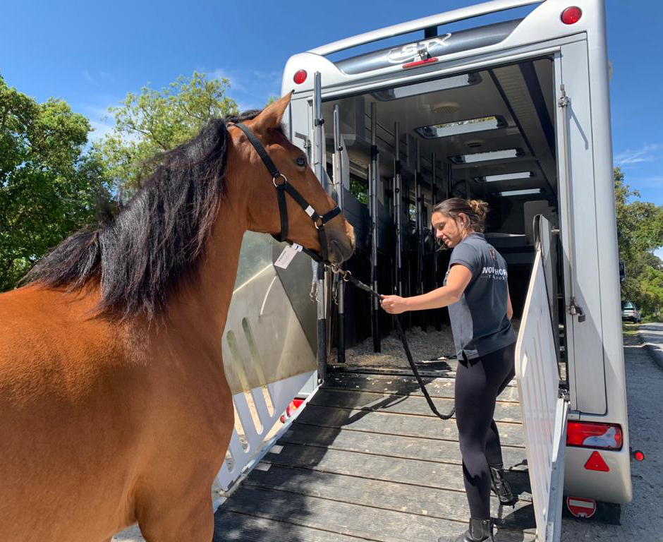
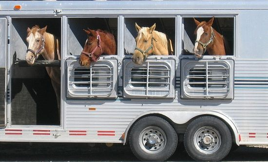

El transporte de caballos requiere estrictas medidas de seguridad para garantizar su bienestar durante el traslado, ya sea a nivel nacional o internacional. Nuestro equipo de profesionales cuenta con una amplia experiencia en la industria, asegurando que cada animal viaje en condiciones óptimas. Utilizamos vehículos diseñados específicamente para el transporte equino, equipados con sistemas avanzados de ventilación, amortiguación y control de temperatura, esenciales para reducir el estrés del animal y prevenir lesiones durante el trayecto. Además, implementamos protocolos rigurosos en la manipulación y carga de los caballos, garantizando un proceso seguro y eficiente. Nuestro personal está capacitado en sujeción y manejo especializado, minimizando riesgos. Para caballos con necesidades especiales, adaptamos nuestras estrategias de traslado, brindando atención individualizada y asegurando un viaje cómodo y sin contratiempos. También realizamos paradas planificadas en recorridos largos para evaluar su estado físico, hidratación y alimentación. Nuestro compromiso con la seguridad incluye un monitoreo constante mediante sistemas de vigilancia dentro de los remolques, permitiéndonos reaccionar rápidamente ante cualquier imprevisto. Asimismo, trabajamos en estrecha colaboración con veterinarios para garantizar la mejor atención posible antes, durante y después del viaje. La prevención es clave, por lo que realizamos inspecciones periódicas a nuestros vehículos, asegurando que todos los sistemas funcionen correctamente y cumplan con las regulaciones nacionales e internacionales. Nuestro objetivo es ofrecer un servicio seguro, confiable y libre de estrés para los caballos, brindando tranquilidad a sus dueños y garantizando el mejor cuidado para cada animal.
El bienestar de los caballos es nuestra prioridad en cada etapa del transporte. Nos aseguramos de que cada animal viaje en condiciones óptimas, minimizando el estrés y garantizando su comodidad en todo momento. Para ello, ofrecemos un cuidado especializado durante el trayecto, con monitoreo constante para evaluar su estado físico y emocional. Nuestros vehículos están diseñados para proporcionar un ambiente seguro y estable, con sistemas de ventilación y amortiguación que reducen el impacto del movimiento y evitan cualquier incomodidad. Además, nuestro equipo está altamente capacitado en el manejo equino, aplicando técnicas que favorecen la tranquilidad del caballo. Desde la carga hasta la llegada a su destino, nos aseguramos de que cada paso del proceso se realice con paciencia y profesionalismo. También brindamos atención especializada para caballos que se dirigen a eventos y competencias, asegurando que lleguen en las mejores condiciones. Ofrecemos preparación previa al viaje, controles veterinarios y un seguimiento exhaustivo para garantizar que cada animal esté listo para desempeñarse de manera óptima. En recorridos largos, realizamos paradas estratégicas para evaluar su bienestar, permitiéndoles descansar, hidratarse y recibir la atención necesaria. Contamos con un protocolo de respuesta rápida ante cualquier eventualidad, asegurando soluciones inmediatas y eficaces en caso de cualquier inconveniente. Nuestra misión es proporcionar un servicio de transporte equino que no solo cumpla con las normativas de seguridad, sino que también respete y priorice el bienestar integral de cada caballo, garantizando un viaje tranquilo, seguro y sin estrés.
Para garantizar un transporte seguro y cómodo, contamos con vehículos especializados diseñados específicamente para el traslado de caballos. Cada uno de nuestros remolques y camiones está equipado con tecnología avanzada que prioriza el bienestar animal y minimiza el estrés durante el viaje. Nuestros vehículos cuentan con sistemas de ventilación que aseguran una circulación de aire adecuada, control de temperatura para adaptarse a distintas condiciones climáticas y suspensiones reforzadas que reducen el impacto del movimiento, brindando mayor estabilidad y confort. Además, disponemos de divisiones internas ajustables que permiten adaptar el espacio según las necesidades de cada caballo, asegurando que viajen con suficiente espacio para moverse sin riesgos de lesiones. La iluminación interior y los sistemas de monitoreo en tiempo real nos permiten observar continuamente a los caballos y reaccionar rápidamente ante cualquier imprevisto. No solo nos centramos en el transporte, sino también en la preparación y descarga segura de los caballos. Implementamos rampas antideslizantes y mecanismos de sujeción acolchonados para facilitar el acceso y evitar accidentes. Para aquellos caballos que requieren atención especial, ofrecemos adaptaciones específicas en nuestros vehículos, asegurando que cada traslado se realice bajo las condiciones más adecuadas. Nuestro compromiso es proporcionar un servicio integral que garantice la seguridad, comodidad y bienestar de cada caballo antes, durante y después del viaje.
La seguridad de los caballos durante el transporte es nuestra prioridad, por lo que contamos con protocolos de emergencia diseñados para actuar de manera rápida y eficiente ante cualquier imprevisto. Nuestro equipo está altamente capacitado para manejar situaciones de riesgo, desde problemas de salud del caballo hasta inconvenientes mecánicos en el vehículo. Disponemos de un plan de acción detallado que incluye comunicación inmediata con veterinarios especializados, puntos de asistencia en ruta y equipo de primeros auxilios equino. Además, nuestros vehículos están equipados con sistemas de monitoreo en tiempo real, lo que nos permite detectar cualquier anomalía en el comportamiento del caballo y responder de inmediato. También realizamos inspecciones previas a cada viaje para minimizar riesgos y garantizar que todos los sistemas de seguridad estén en óptimas condiciones. En caso de emergencias médicas, seguimos procedimientos específicos para estabilizar al caballo y trasladarlo a la clínica veterinaria más cercana si es necesario. Asimismo, contamos con un sistema de comunicación constante con los propietarios para mantenerlos informados en todo momento. Nuestro compromiso es ofrecer un transporte seguro y controlado, asegurándonos de que cada caballo reciba la mejor atención ante cualquier eventualidad.
Además del transporte, ofrecemos una gama de servicios adicionales diseñados para garantizar el bienestar y comodidad de cada caballo en todo momento. Contamos con monitoreo constante durante el traslado, utilizando sistemas de vigilancia y supervisión en tiempo real para detectar cualquier anomalía y responder de inmediato. Nuestro equipo está capacitado para proporcionar cuidados veterinarios en caso de ser necesario, asegurando que cada caballo reciba la atención adecuada durante el viaje. También brindamos asistencia personalizada, adaptándonos a las necesidades específicas de cada animal. Esto incluye ajustes en la alimentación, tiempos de descanso programados y manejo especializado para caballos nerviosos o con requerimientos especiales. Para aquellos caballos que se trasladan a competencias o eventos, ofrecemos preparación previa y seguimiento posterior al viaje, asegurando que lleguen en óptimas condiciones y sin estrés. Nuestro compromiso es proporcionar un servicio integral que no solo garantice un traslado seguro, sino que también cuide de cada caballo antes, durante y después del viaje.